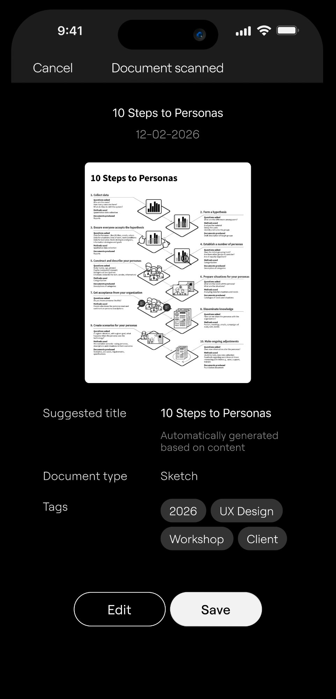
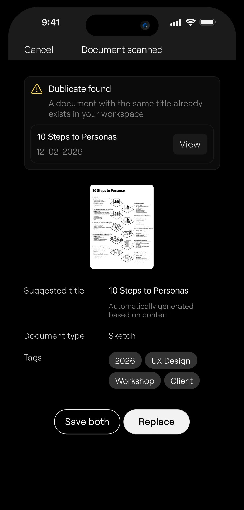
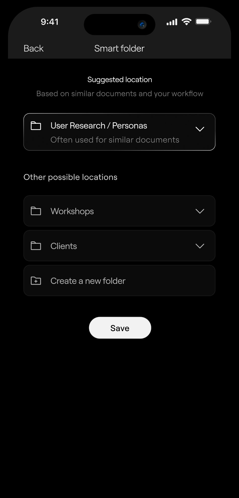
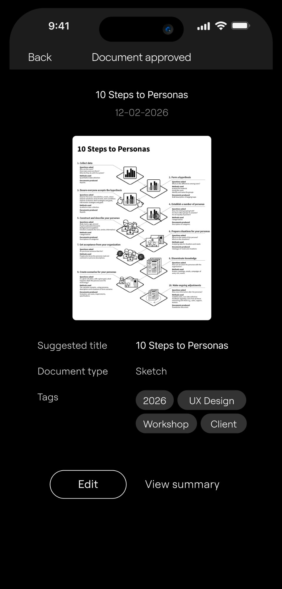
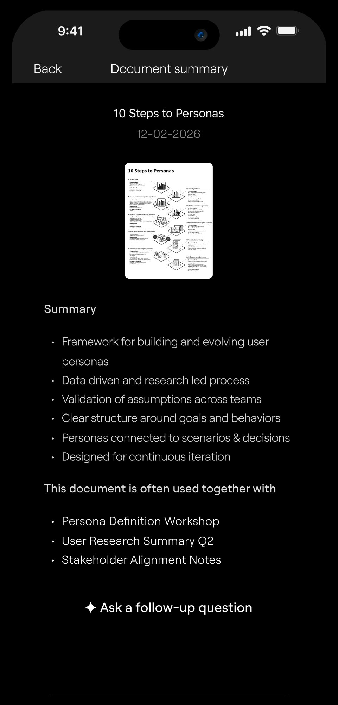
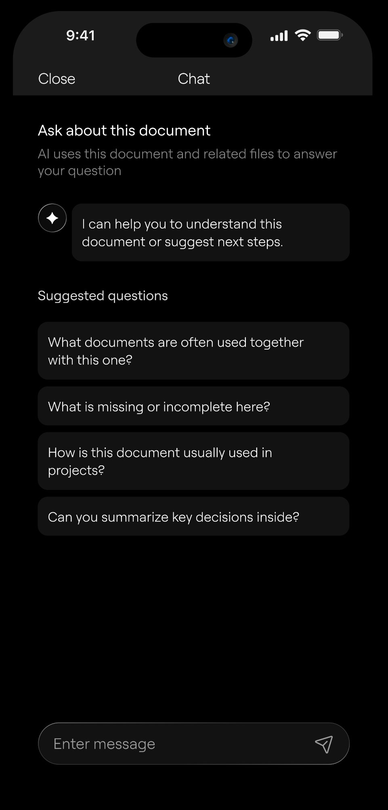
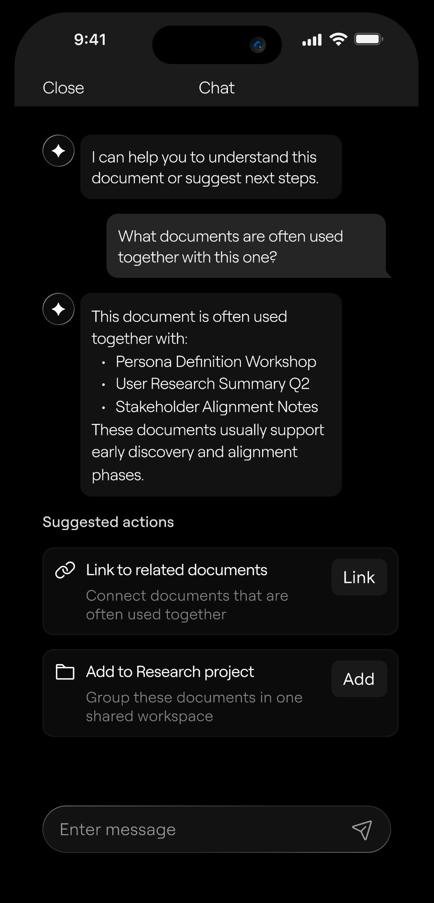

A B2B mobile and tablet application for corporate teams working with large volumes of documents. The product supports scanning, organization, and understanding of documents - helping users move from raw files to informed decisions.
I led the end-to-end product design - from understanding how teams actually use documents, to defining principles that guide every AI interaction, to building high-fidelity screens.
Teams store documents, but can't reliably use them later to make decisions.
In document-heavy teams, files are scanned, uploaded, and archived daily. Over time, structure breaks, context is lost, and documents stop supporting real work.
To understand how documents are actually used in daily work, I focused on real workflows, behaviors, and decision moments rather than demographics.
What I found:
These insights directly informed the design principles and the role of AI across the product:
Users don't need another place to store documents.
They need a system that understands documents in context, helps extract meaning, and supports the decisions that follow.
The design language prioritises information density without noise. A monochrome palette, clean hierarchy, and generous whitespace let the content - and the AI - do the work.
These principles guided every design decision below ↓
Document scanning with AI details recognition
The system detects document structure, extracts key attributes, and suggests a title, type, and tags based on content.
Users can review or adjust suggestions before saving, keeping full control over the outcome.

Identifying existing documents across the system
During scanning, AI checks the archive for duplicates or closely related files.
Users are notified early to avoid redundant storage and fragmented information.

The system proposes the most relevant location
Based on past behavior and document similarity, the system recommends the most relevant folder.
Users can accept the suggestion, choose another location, or create a new folder on the spot.

Key points extraction
AI highlights the most important ideas and structure of the document in a concise format.
This allows users to grasp content value without opening or reading the full file.

The system adds context beyond the document itself
Insights are generated contextually based on the document type, content, and usage patterns, ensuring relevance without requiring users to prompt the system.

Asking questions within document context
The AI assistant allows users to query the document using natural language.
Questions can focus on meaning, context, or relationships with other documents. Suggested prompts appear after the first interaction to guide exploration.

AI provides next-step recommendations
Once a document is understood, users often need help deciding what to do next. Smart Suggestions support this moment by proposing relevant actions based on document content, usage patterns, and related context.
Suggestions appear only after intent is established through exploration or conversation.

AI supports the workflow quietly in the background, stepping in only when it reduces effort or adds clarity.
Estimates based on workflow analysis and comparable document management tools.
Users understand why a document matters, what information it contains, and how it supports their current task.
Summaries and insights help users grasp the value of a document at the right moment.
Relevant context and next steps are surfaced when users need them.
Automation supports routine decisions, while users remain in charge of adjustments and final actions.
This project reinforced the importance of designing AI as an assistant embedded into real workflows.
The value does not come from automation alone, but from knowing when to step in and when to stay silent.